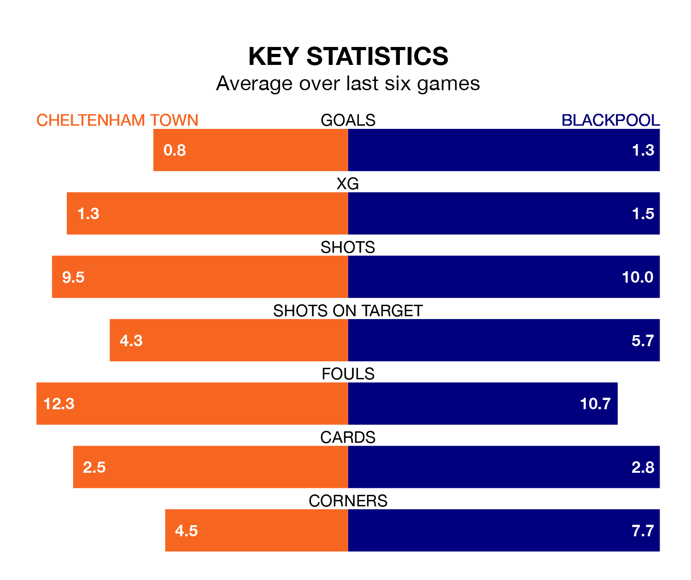

Struggling Cheltenham Town face Blackpool at the Completely-Suzuki Stadium on Tuesday looking to build on a win in their last league outing.
After securing all three points with a 1-0 victory over Cambridge United on Saturday, the Robins sit 22nd in EFL League One.
They travel to play a Blackpool side eighth in the standings, who were held in their last match, 1-1 against Oxford United.
With 22 goals in 29 games so far this season, Cheltenham are the league's joint-second-lowest scorers with 0.8 goals per game. And they are conceding more than average, letting in 40 goals at a rate of 1.4 per game.
Blackpool, meanwhile, are above average scorers, with 1.5 goals per game, compared to a league average of 1.3. They have conceded 1.2 goals per game.
With Daniel Grimshaw between the sticks, the Seasiders can rely on one of the league's safest pair of hands. He has kept 11 clean sheets in his 30 appearances this season, and only two other 'keepers – Portsmouth's Will Norris and Bolton Wanderers' Nathan Baxter – have been able to prevent the opposition scoring on more occasions in EFL League One.
In Town's net, Luke Southwood has six clean sheets in 29 games. He has conceded a goal every 71 minutes, 20% more often than the 82 minutes between goals for Grimshaw.
The Robins are in disappointing form in EFL League One, with two wins and four losses from their last six games.
With three wins and two draws over that period, the visitors' form is better – they have taken 11 points from 18, compared to the home team's six.
Updated: 09:02 (UTC), 13/02/24